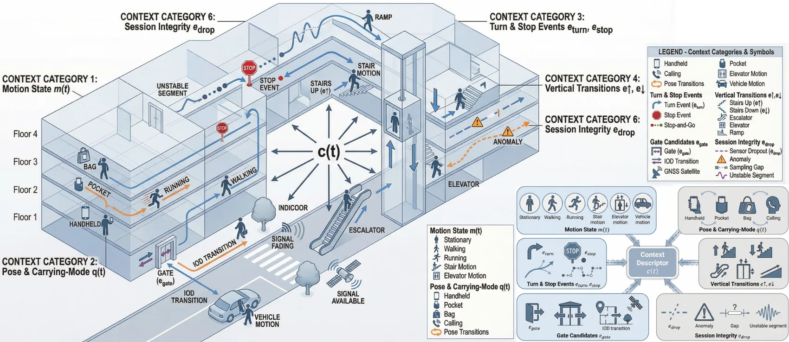
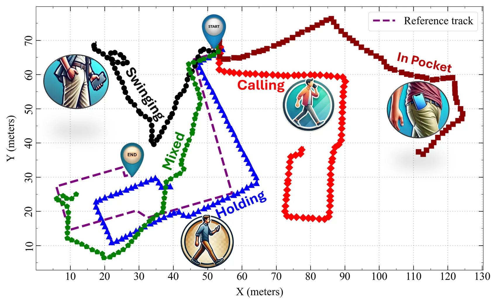
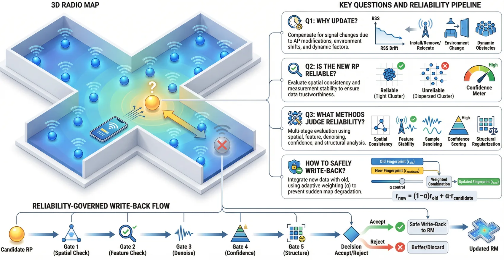
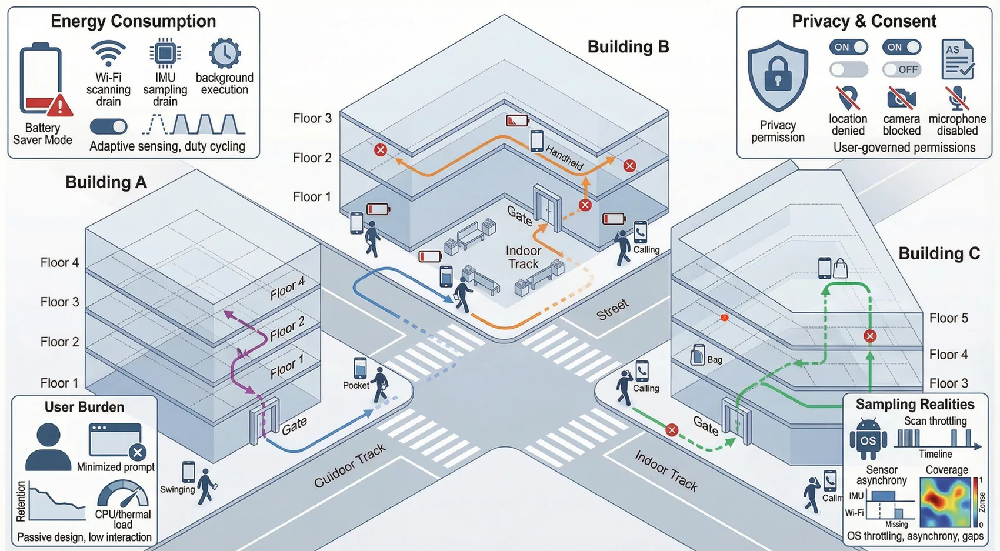
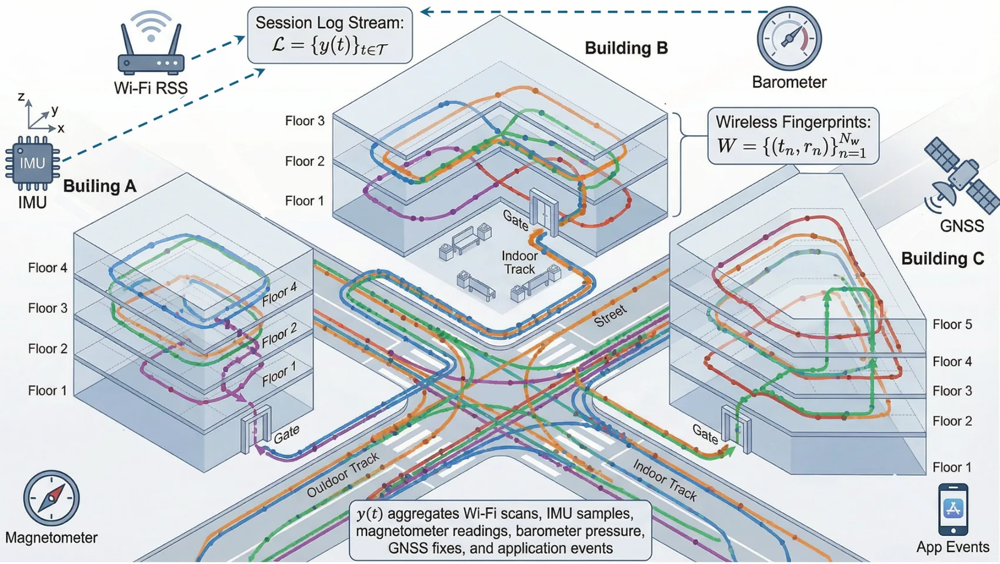
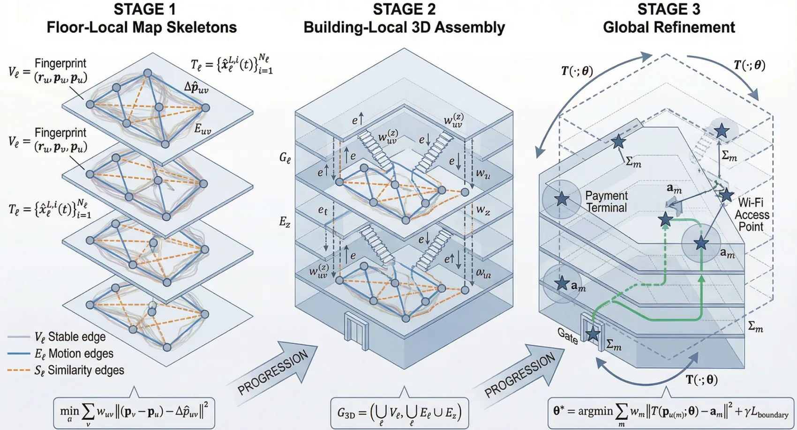
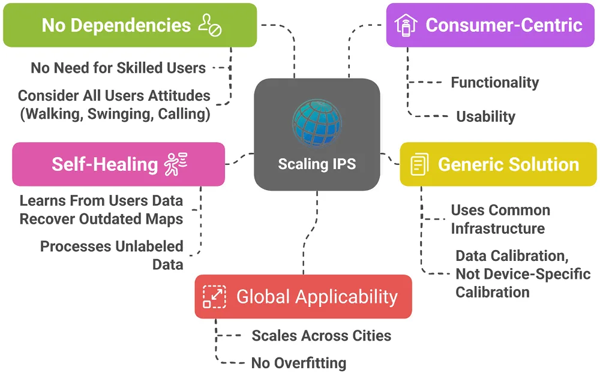

Research Themes
A thematic map of Ahmed Mansour's work across indoor positioning research, engineering, and deployment.
Autonomous radio mapping
- Reliability-governed scaling of mobile crowdsensing-based 3D radio mapping for ubiquitous indoor positioning: An uncertainty-aware lifecycle review and deployment-oriented pipeline (2026)
- Towards Ubiquitous IPS: Leveraging Crowdsourced Data Accumulation Over Time to Alleviate Reliance on External Sources in Initial Fingerprinting Map Generation (2024)
Cooperative positioning
Deployment and spatial safety
IOD and seamless navigation
PDR and smartphone sensing
- Hybrid Neural Network-Based PDR with Multi-Layer Heading Correction Across Smartphone Carrying Modes (2026)
- Enhancing real-time heading estimation for pedestrian navigation via deep learning and smartphone embedded sensors (2025)
- Drift Control of Pedestrian Dead Reckoning (PDR) for Long Period Navigation under Different Smartphone Poses (2021)
Research foundation
Scalable IPS and crowdsensing
- Towards scalable indoor positioning systems (IPS): User-centric challenges, methods, and recommendations for user-friendly crowd-powered framework (2026)
- Everywhere: A Framework for Ubiquitous Indoor Localization (2023)
- Leveraging human mobility and pervasive smartphone measurements-based crowdsourcing for developing self-deployable and ubiquitous indoor positioning systems (2023)
Urban and seamless positioning
- AC-HMM: azimuth-constrained hidden Markov model-based map matching for robust pedestrian positioning in urban canyons (2026)
- GNSS Positioning Aided with Pedestrian Dead Reckoning (PDR) in Urban Areas (2026)
- Tightly Coupled Bluetooth Enhanced GNSS/PDR System for Pedestrian Navigation in Dense Urban Environments (2024)
Wi-Fi fingerprinting and heading reliability
Research Themes and Visual Research Atlas
A thematic map of Ahmed Mansour's work across indoor positioning research, engineering, and deployment.
This page keeps the thematic map and visual atlas together. The themes explain the main research directions, while the figures show how indoor positioning becomes a system: smartphones sense movement and signals, context explains transitions, radio maps evolve, and reliability checks support deployment-ready decisions.
Smart building positioning system
A high-level view of the hub: wireless signals, indoor floor geometry, smartphones, and route traces become one positioning service for smart buildings and academic research visualization.

Context descriptor c(t)
This visual groups motion state, carrying mode, turns, stops, vertical transitions, indoor-outdoor gates, and data-quality events into a compact context layer for adaptive positioning.

Phone pose and trajectory behavior
The same pedestrian route can look different under swinging, handheld, calling, mixed, and pocket use. The figure explains why pose-aware correction is central to smartphone PDR.

Reliability-governed radio-map write-back
Candidate fingerprints pass through spatial, feature, denoising, confidence, and structural gates before they are allowed to update the radio map.

Crowd-powered IPS deployment realities
Scalable indoor positioning must handle battery limits, privacy permissions, missing scans, carrying mode changes, cross-building differences, and real user behavior.

Multisensor session log stream
A mobile session y(t) can aggregate Wi-Fi, IMU, barometer, magnetometer, GNSS, and application events, turning raw sensing into a time-ordered spatial evidence stream.

Skeleton, assembly, and refinement
Floor-local route skeletons are assembled into a building-local 3D structure and refined using access-point anchors, gate constraints, and global geometric adjustment.

Principles for scaling IPS
The conceptual goal is a generic, self-healing, user-centered IPS that learns from ordinary user data while reducing dependency on skilled surveyors and device-specific calibration.